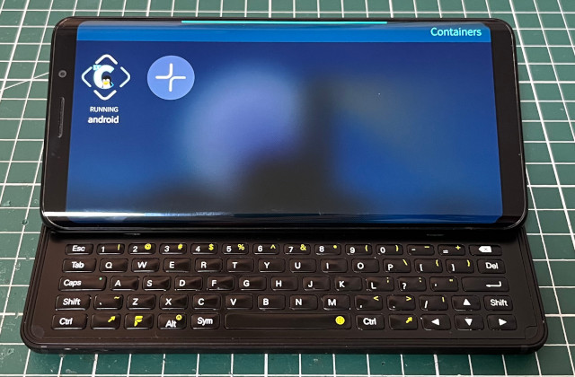

參考資訊：
https://chumrpm.netlify.app/
https://github.com/sailfish-containers/harbour-containers
https://repo.sailfishos.org/obs/home:/kabouik/sailfish_latest_aarch64/aarch64/
https://github.com/sailfish-containers/lxc-templates-desktop/wiki/Desktop#start-desktop
$ cd $ curl https://repo.sailfishos.org/obs/sailfishos:/chum/5.0.0.62_aarch64/aarch64/sailfishos-chum-gui-0.6.9-1.10.1.bso.aarch64.rpm --output 1.rpm $ sudo zypper install 1.rpm
開啟Chum GUI更新Repository，接著執行如下命令安裝：
$ sudo zypper install lxc-templates-desktop $ sudo zypper install qxcompositor $ sudo zypper install harbour-containers
